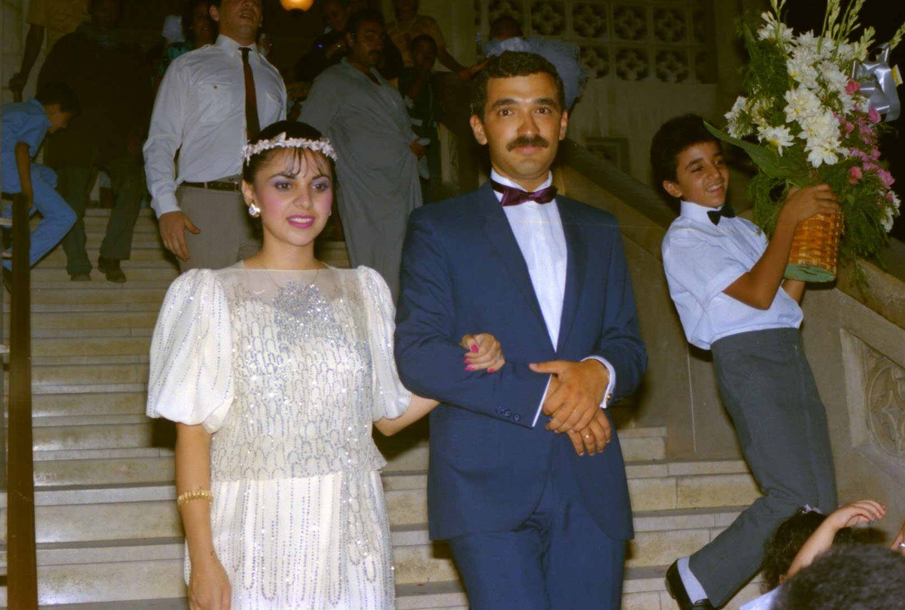

 エジプト人宅に招かれても、殆どそこの奥さん娘さん達と顔を会わせることはない。極まれに結婚パーティーに 行くとそこでは夫婦にお会いする事が多い。こんな時にうっかり「貴方の奥さんはお綺麗な方ですね」などと言っ たら「私に譲って下さい」の意味になるかもしれないので要注意である。 これは何も女性に対する問題だけではない、相手の持ち物全てに対しても同じである。持ち物を誉めることは「く れ」という意味になるらしい。只我々と普段接しているエジプト人達は我々が日本人と言うことでそこのニュアンスについては割り引いて話を合 わせてくれている感じはした。 ２００１年１１月１８日 記
|